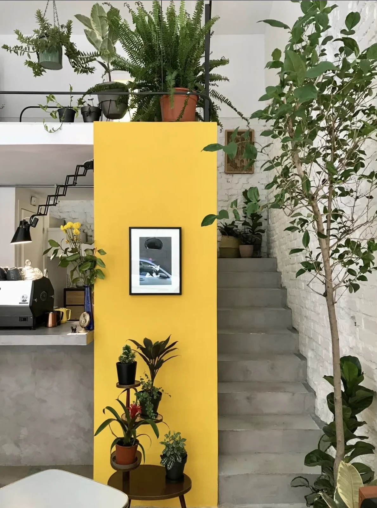
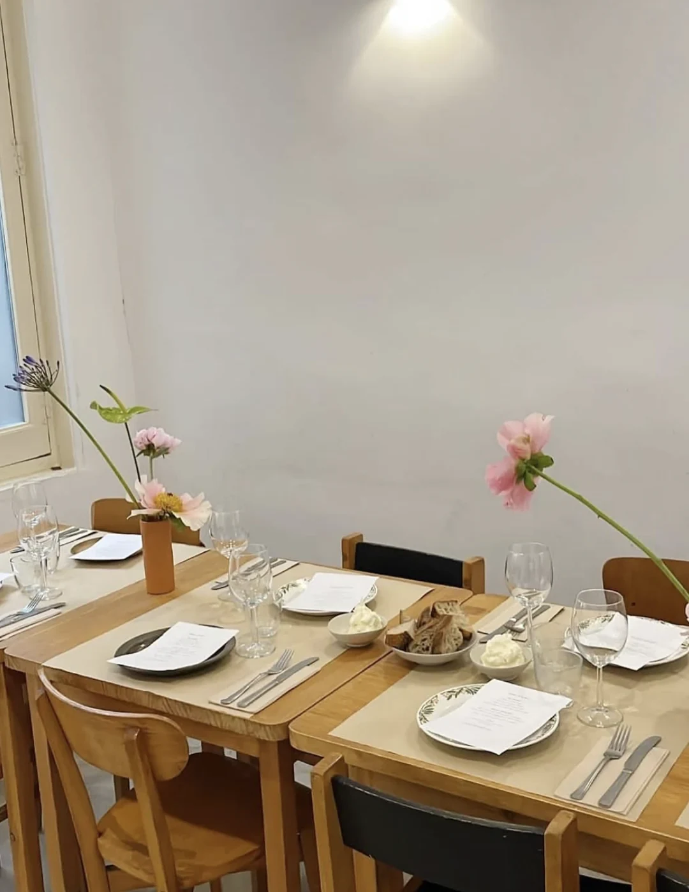
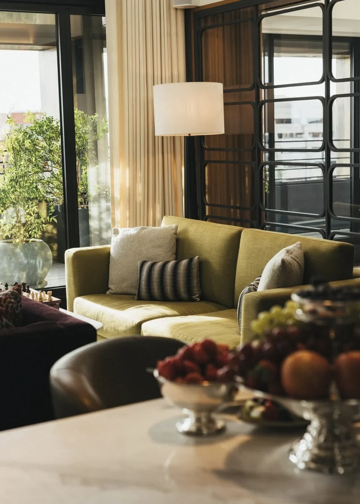
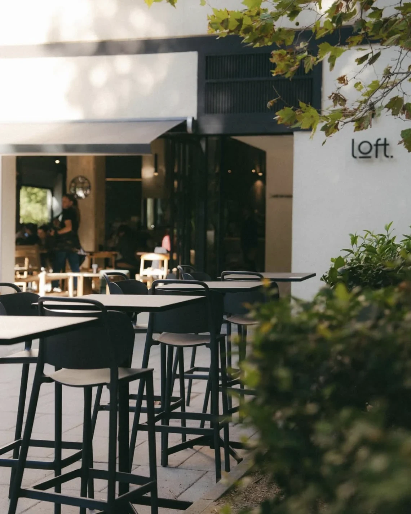
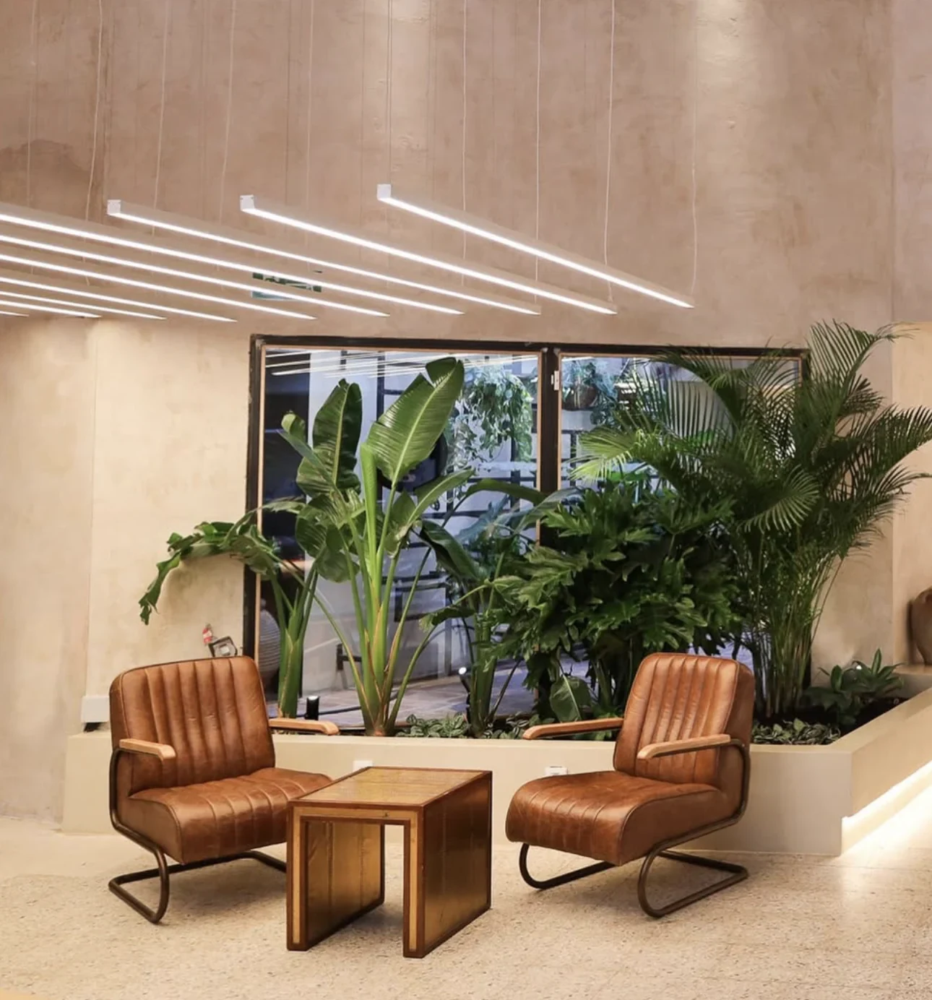
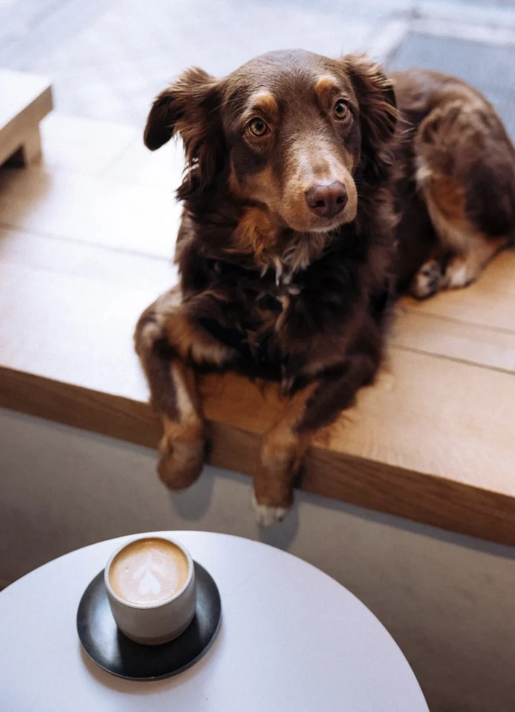
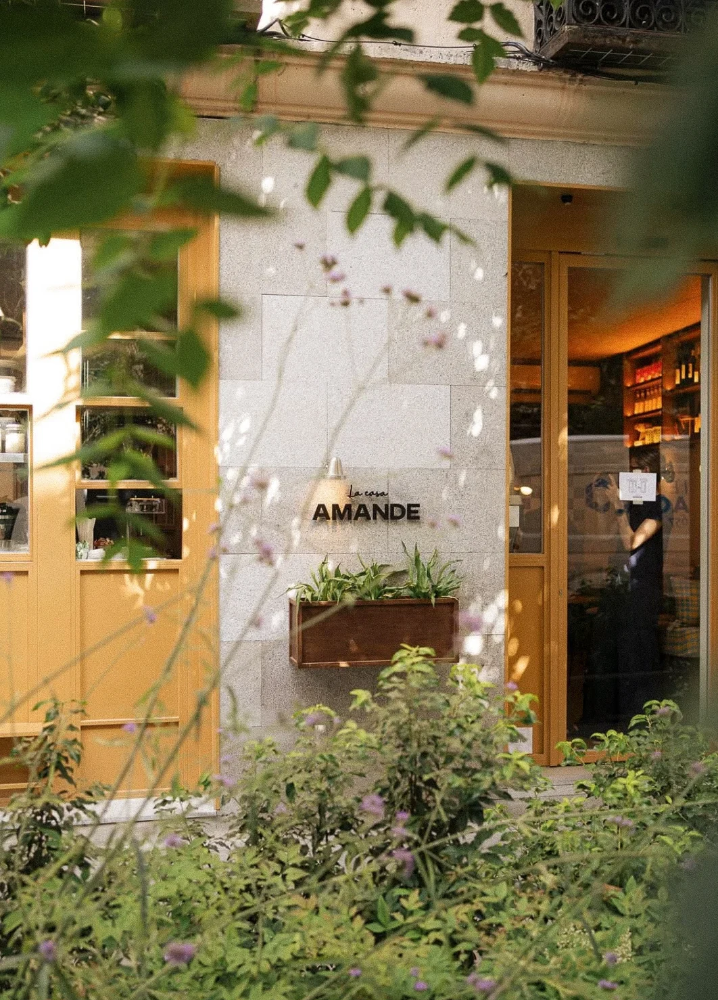

Faraday
CAFÉ · RECORDS · CHUECA
A characterful café, record shop and design store made for slow afternoons.
City Edition · Madrid
Grand boulevards, neighbourhood cafés and quietly beautiful places to share with your dog.
8 recommendations

CAFÉ · RECORDS · CHUECA
A characterful café, record shop and design store made for slow afternoons.

CAFÉ · RESTAURANT · SALESAS
An intimate all-day café with thoughtful cooking and a warm neighbourhood feel.

HOTEL · SALAMANCA
A refined urban retreat with garden calm in the heart of Madrid.

SPECIALTY COFFEE · BRUNCH · TETUÁN
Specialty coffee and relaxed brunch in a light, contemporary setting.

CAFÉ · BAKERY · SALESAS
A creative food space bringing together specialty coffee, an artisan bakery and fermentation lab.
ALL-DAY CAFÉ · ANTÓN MARTÍN
A characterful all-day café moving naturally from breakfast and coffee to dinner and wine.

SPECIALTY COFFEE · MATCHA · CHAMBERÍ
A calm, contemporary coffee bar known for specialty coffee, matcha and considered details.

PLANT-BASED CAFÉ · CHAMBERÍ
A serene plant-based café known for artisan granola and house-made almond and oat drinks.
Coco’s next stop
Share the place’s name and Instagram. Coco and the Guide team will review it before it joins the Guide.